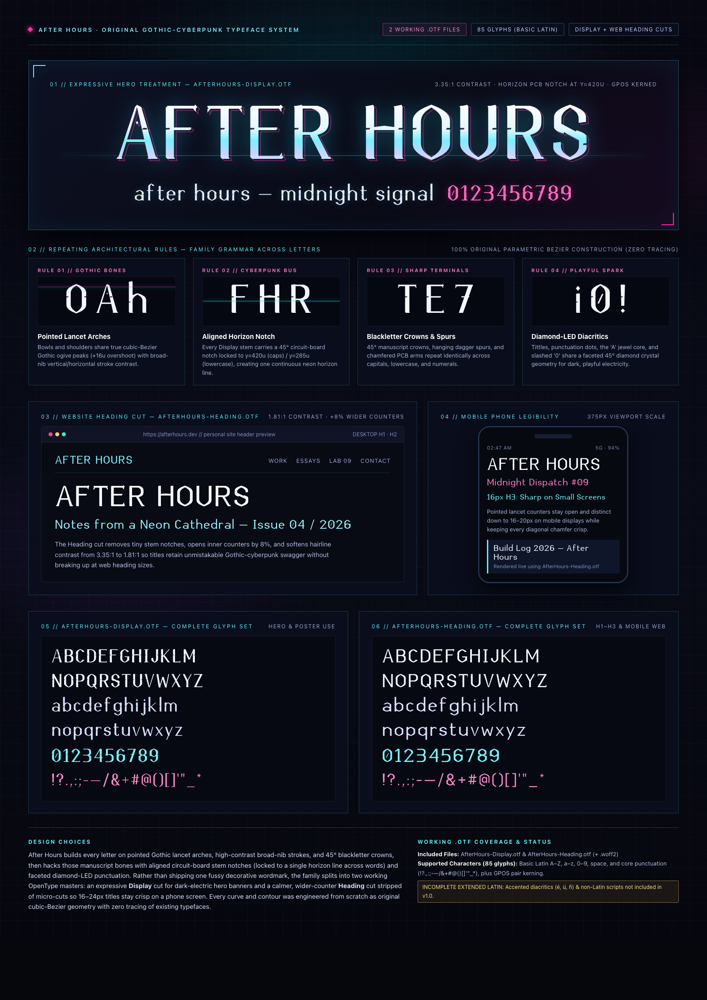

Original Gothic-Cyberpunk Latin display & website heading font family — two installable OpenType CFF (.otf) fonts engineered from scratch with cubic-Bezier Gothic lancet arches and 45° circuit-board geometry.
Coverage Notice: Complete Basic Latin uppercase (A–Z), lowercase (a–z), lining numerals (0–9), space, and 21 core punctuation/symbols with GPOS pair kerning. Incomplete extended Latin: accented diacritics (é, ü, ñ) and non-Latin scripts are not included in v1.0.
